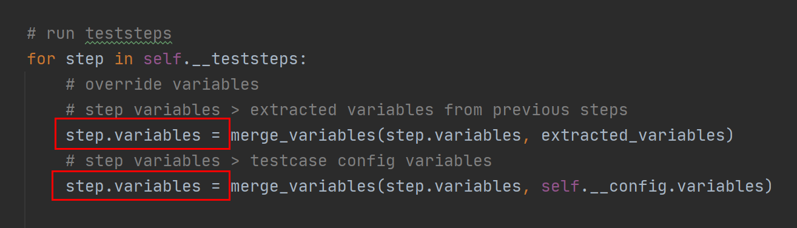
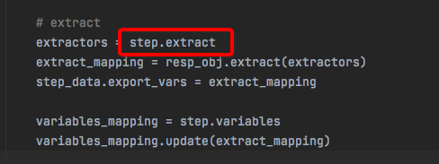
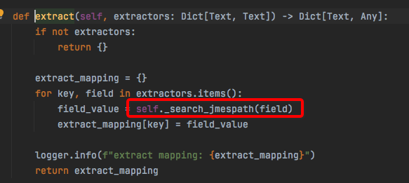
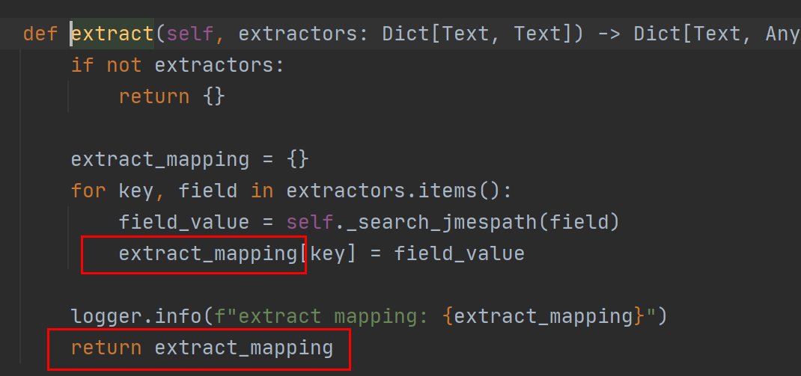
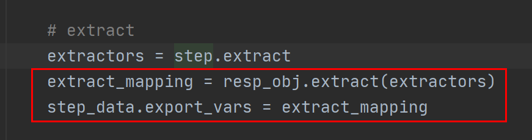
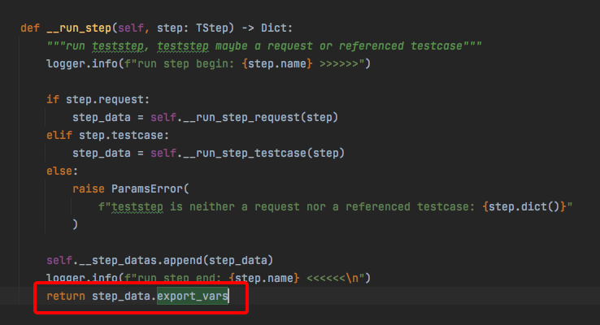
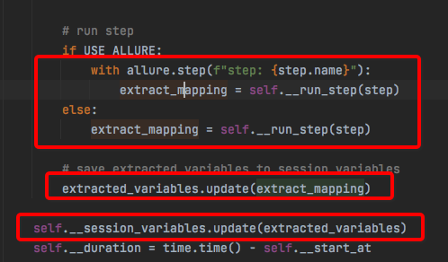

【HttpRunner】HttpRunner3的变量是如何传递的¶
HttpRunner3的变量可以在测试类的用例配置中通过variables添加，也可以在测试步骤中使用extract()、with_jmespath()提取出来放到变量x，再用$x传递给下一个接口使用，比如登录到下单流程的部分测试脚本如下：
from httprunner import HttpRunner, Config, Step, RunRequest
class TestLoginPay(HttpRunner):
config = (
Config("登录到下单流程")
.variables(
**{
"skuNum": "3"
}
)
.base_url("http://127.0.0.1:5000")
)
teststeps = [
Step(
RunRequest("登录")
.post("/login")
.with_headers(**{"Content-Type": "application/json"})
.with_json({"username": "dongfanger", "password": "123456"})
.extract()
.with_jmespath("body.token", "token")
.validate()
.assert_equal("status_code", 200)
),
Step(
RunRequest("搜索商品")
.get("searchSku?skuName=电子书")
.with_headers(**{"token": "$token"})
.extract()
.with_jmespath("body.skuId", "skuId")
.with_jmespath("body.price", "skuPrice")
.validate()
.assert_equal("status_code", 200)
),
]
首先来看用例配置的这段代码：
config = (
Config("登录到下单流程")
.variables(
**{
"skuNum": "3"
}
)
.base_url("http://127.0.0.1:5000")
)
是怎么实现的。Config的定义如下：
class Config(object):
def __init__(self, name: Text):
self.__name = name
self.__variables = {}
self.__base_url = ""
self.__verify = False
self.__export = []
self.__weight = 1
caller_frame = inspect.stack()[1]
self.__path = caller_frame.filename
@property
def name(self) -> Text:
return self.__name
@property
def path(self) -> Text:
return self.__path
@property
def weight(self) -> int:
return self.__weight
def variables(self, **variables) -> "Config":
self.__variables.update(variables)
return self
def base_url(self, base_url: Text) -> "Config":
self.__base_url = base_url
return self
def verify(self, verify: bool) -> "Config":
self.__verify = verify
return self
def export(self, *export_var_name: Text) -> "Config":
self.__export.extend(export_var_name)
return self
def locust_weight(self, weight: int) -> "Config":
self.__weight = weight
return self
def perform(self) -> TConfig:
return TConfig(
name=self.__name,
base_url=self.__base_url,
verify=self.__verify,
variables=self.__variables,
export=list(set(self.__export)),
path=self.__path,
weight=self.__weight,
)
其中variables的定义是：
def variables(self, **variables) -> "Config":
self.__variables.update(variables)
return self
self.__variables = {}是个字典。为什么要加个前缀**呢？这个**换个模样估计就看懂了：
def foo(**kwargs):
print(kwargs)
>>> foo(x=1, y=2)
{'x': 1, 'y': 2}
>>> foo(**{'x': 1, 'y': 2})
{'x': 1, 'y': 2}
self.__variables.update(variables)里面的upate方法是字典添加到字典里，比如：
tinydict = {'Name': 'Zara', 'Age': 7}
tinydict2 = {'Sex': 'female' }
tinydict.update(tinydict2) # {'Age': 7, 'Name': 'Zara', 'Sex': 'female'}
整个方法的意思就是从``variables``中取出``variables``字典，然后添加到``self.__variables``字典里。
这个Config会在runner.py里面的HttpRunner类初始化时加载到self.__config：
def __init_tests__(self) -> NoReturn:
self.__config = self.config.perform()
self.__teststeps = []
for step in self.teststeps:
self.__teststeps.append(step.perform())
然后self.__config会在各个地方调用。比如在__run_step_request中把base_url拼装起来。：
## prepare arguments
method = parsed_request_dict.pop("method")
url_path = parsed_request_dict.pop("url")
url = build_url(self.__config.base_url, url_path)
parsed_request_dict["verify"] = self.__config.verify
parsed_request_dict["json"] = parsed_request_dict.pop("req_json", {})
而接下来的代码是真把我看晕了。
第一个问题：config里面的变量是怎么用到测试步骤里面的？
答案就是：
step.variables = merge_variables(step.variables, self.__config.variables)
通过merge_variables函数合并到了step.variables，step是下面这个类的实例：
class TStep(BaseModel):
name: Name
request: Union[TRequest, None] = None
testcase: Union[Text, Callable, None] = None
variables: VariablesMapping = {}
setup_hooks: Hooks = []
teardown_hooks: Hooks = []
# used to extract request's response field
extract: VariablesMapping = {}
# used to export session variables from referenced testcase
export: Export = []
validators: Validators = Field([], alias="validate")
validate_script: List[Text] = []
step.variables在run_testcase里面赋值：

第一部分是把前面步骤提取的变量合并进来。
第二部分是把用例配置里面的变量合并进来，这就是第一个问题的答案。
第二个问题：变量是怎么提取出来的？
先看看RequestWithOptionalArgs类的extract方法：
def extract(self) -> StepRequestExtraction:
return StepRequestExtraction(self.__step_context)
class StepRequestExtraction(object):
def __init__(self, step_context: TStep):
self.__step_context = step_context
def with_jmespath(self, jmes_path: Text, var_name: Text) -> "StepRequestExtraction":
self.__step_context.extract[var_name] = jmes_path
return self
# def with_regex(self):
# # TODO: extract response html with regex
# pass
#
# def with_jsonpath(self):
# # TODO: extract response json with jsonpath
# pass
def validate(self) -> StepRequestValidation:
return StepRequestValidation(self.__step_context)
def perform(self) -> TStep:
return self.__step_context
这就是在测试脚本中用到的extract()和with_jmespath()。
可以看到作者这里写了TODO支持正则表达式和JsonPath表达式。
然后把变量名和JmesPath表达式存入了self.__step_context.extract中，这会用在：

从而传入另外这个ResponseObject类的extract方法：

然后self._search_jmespath根据表达式把值找到：
def _search_jmespath(self, expr: Text) -> Any:
resp_obj_meta = {
"status_code": self.status_code,
"headers": self.headers,
"cookies": self.cookies,
"body": self.body,
}
if not expr.startswith(tuple(resp_obj_meta.keys())):
return expr
try:
check_value = jmespath.search(expr, resp_obj_meta)
except JMESPathError as ex:
logger.error(
f"failed to search with jmespath\n"
f"expression: {expr}\n"
f"data: {resp_obj_meta}\n"
f"exception: {ex}"
)
raise
return check_value
存入extract_mapping中：

再存入step_data.export_vars：

然后在__run_step中返回：

最后通过extracted_variables存入到self.__session_variables中：

self.__session_variables是runner.py模块中HttpRunne类的属性，可以理解为一个session级别的变量池。
第三个问题：为什么用``$``就能直接使用变量？
在run_testcase方法中有一段代码，解析变量：
## parse variables
step.variables = parse_variables_mapping(
step.variables, self.__project_meta.functions
)
parse_variables_mapping的定义如下：
def parse_variables_mapping(
variables_mapping: VariablesMapping, functions_mapping: FunctionsMapping = None
) -> VariablesMapping:
parsed_variables: VariablesMapping = {}
while len(parsed_variables) != len(variables_mapping):
for var_name in variables_mapping:
if var_name in parsed_variables:
continue
var_value = variables_mapping[var_name]
variables = extract_variables(var_value)
# check if reference variable itself
if var_name in variables:
# e.g.
# variables_mapping = {"token": "abc$token"}
# variables_mapping = {"key": ["$key", 2]}
raise exceptions.VariableNotFound(var_name)
# check if reference variable not in variables_mapping
not_defined_variables = [
v_name for v_name in variables if v_name not in variables_mapping
]
if not_defined_variables:
# e.g. {"varA": "123$varB", "varB": "456$varC"}
# e.g. {"varC": "${sum_two($a, $b)}"}
raise exceptions.VariableNotFound(not_defined_variables)
try:
parsed_value = parse_data(
var_value, parsed_variables, functions_mapping
)
except exceptions.VariableNotFound:
continue
parsed_variables[var_name] = parsed_value
return parsed_variables
非常的复杂。其中有个函数extract_variables：
def extract_variables(content: Any) -> Set:
""" extract all variables in content recursively.
"""
if isinstance(content, (list, set, tuple)):
variables = set()
for item in content:
variables = variables | extract_variables(item)
return variables
elif isinstance(content, dict):
variables = set()
for key, value in content.items():
variables = variables | extract_variables(value)
return variables
elif isinstance(content, str):
return set(regex_findall_variables(content))
return set()
里面有个regex_findall_variables函数：
def regex_findall_variables(raw_string: Text) -> List[Text]:
try:
match_start_position = raw_string.index("$", 0)
except ValueError:
return []
vars_list = []
while match_start_position < len(raw_string):
# Notice: notation priority
# $$ > $var
# search $$
dollar_match = dolloar_regex_compile.match(raw_string, match_start_position)
if dollar_match:
match_start_position = dollar_match.end()
continue
# search variable like ${var} or $var
var_match = variable_regex_compile.match(raw_string, match_start_position)
if var_match:
var_name = var_match.group(1) or var_match.group(2)
vars_list.append(var_name)
match_start_position = var_match.end()
continue
curr_position = match_start_position
try:
# find next $ location
match_start_position = raw_string.index("$", curr_position + 1)
except ValueError:
# break while loop
break
return vars_list
在这个函数中看到了$符号的身影，就是在这里解析的了。而整个解析过程那是相当的复杂，没有用现成的包，而是作者自己实现的。并且还有个长达548行的parser_test.py测试代码，要说清楚，估计得另外再写一篇专项文章了。